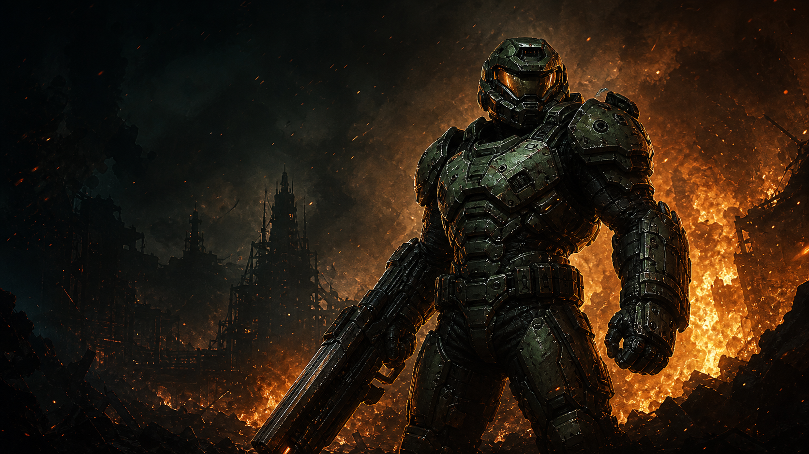
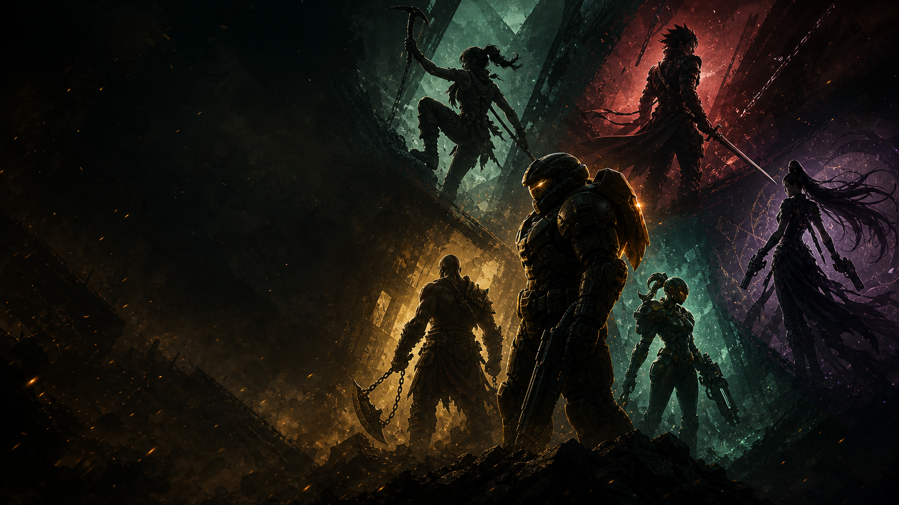
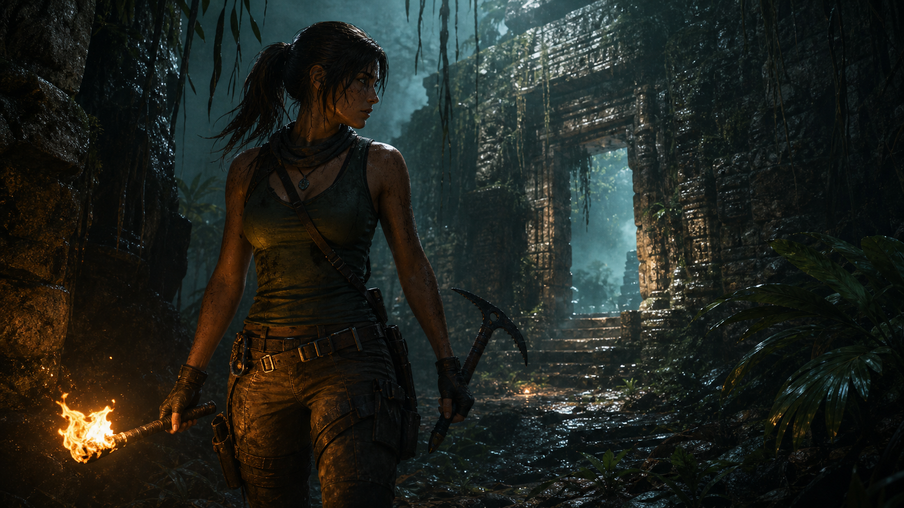
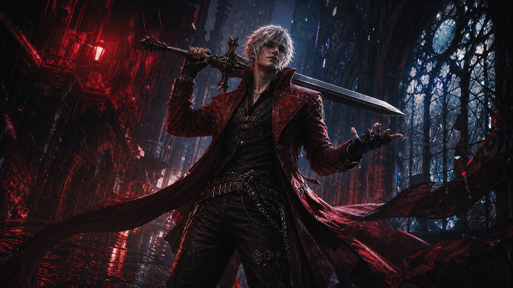
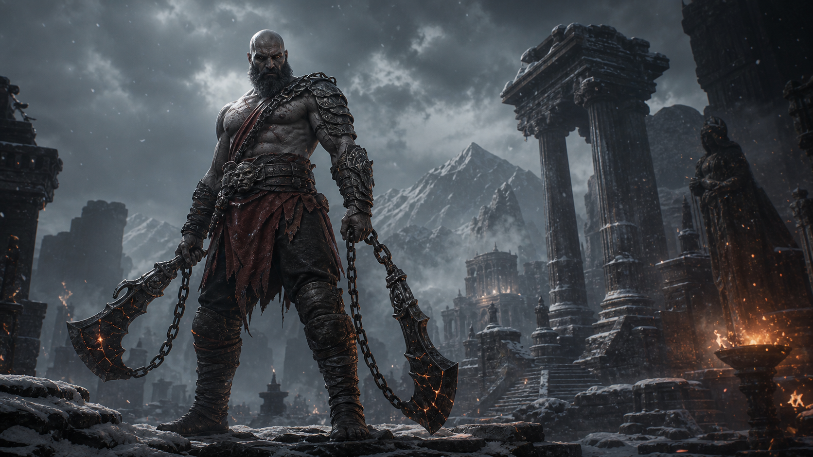
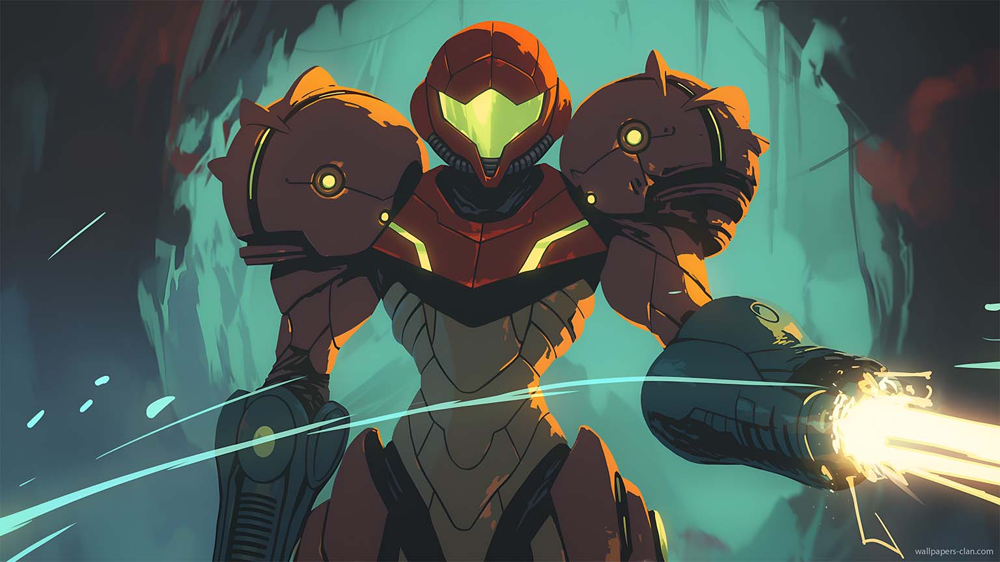
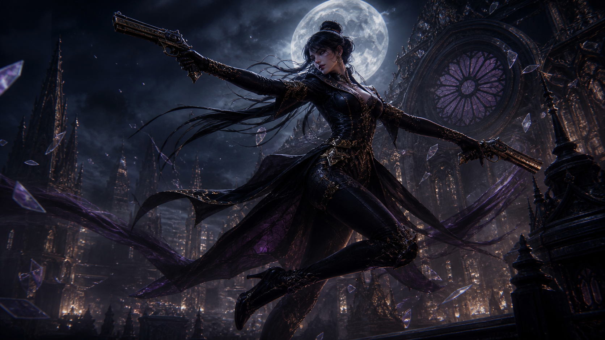

01

Doom Slayer
Ritmo brutal, lectura clara del combate y una silueta imposible de ignorar.
Un homenaje visual a figuras que hicieron que correr, esquivar, disparar y blandir espadas se sintiera legendario.

Seis nombres enormes, ordenados por impacto, presencia y energia jugable. Cambia las imagenes cuando quieras por tus capturas o arte.

Ritmo brutal, lectura clara del combate y una silueta imposible de ignorar.

Aventura fisica, precision y curiosidad convertidas en identidad.

Estilo, combos y confianza teatral en cada movimiento.

Peso, violencia coreografiada y una presencia que llena la pantalla.

Exploracion, aislamiento y armadura iconica con energia futurista.

Elegancia extrema, control aereo y una firma visual inconfundible.
Tres escenas de alto contraste para reforzar el tono de combate, aventura y estilo que mueve el ranking.